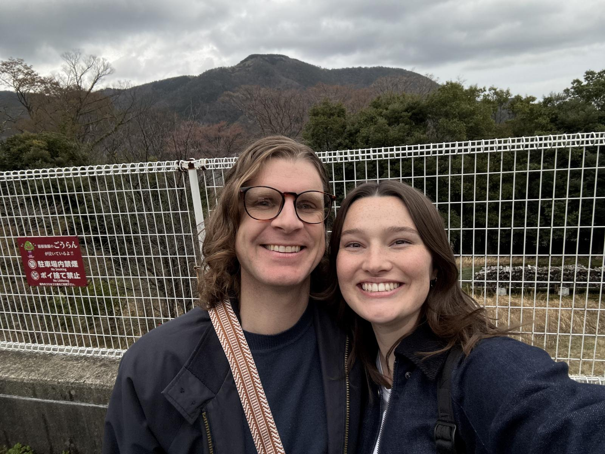
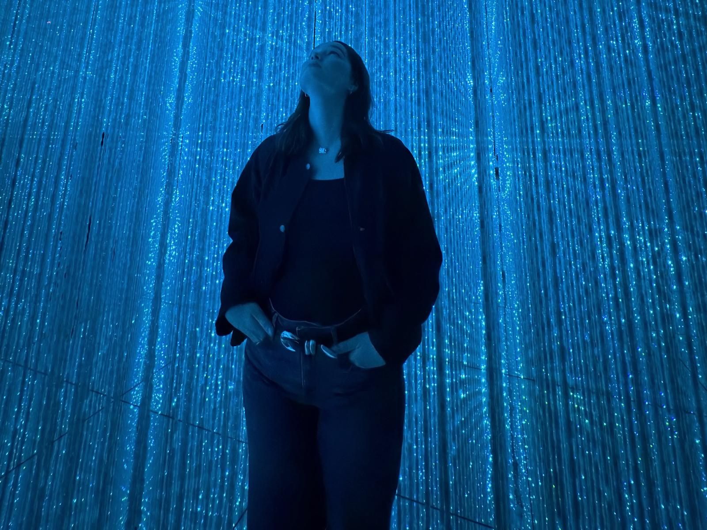
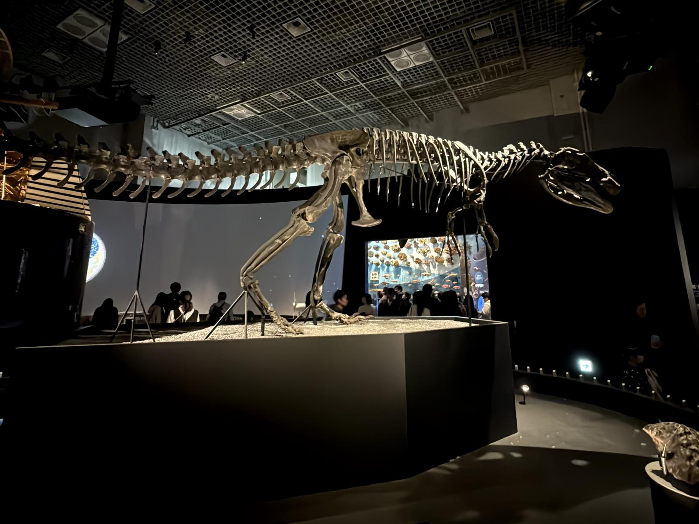
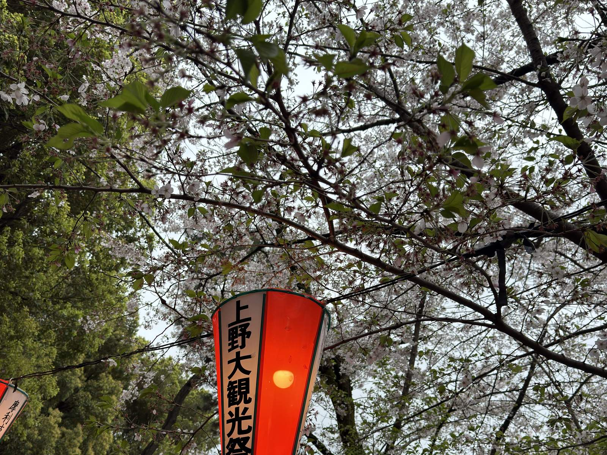
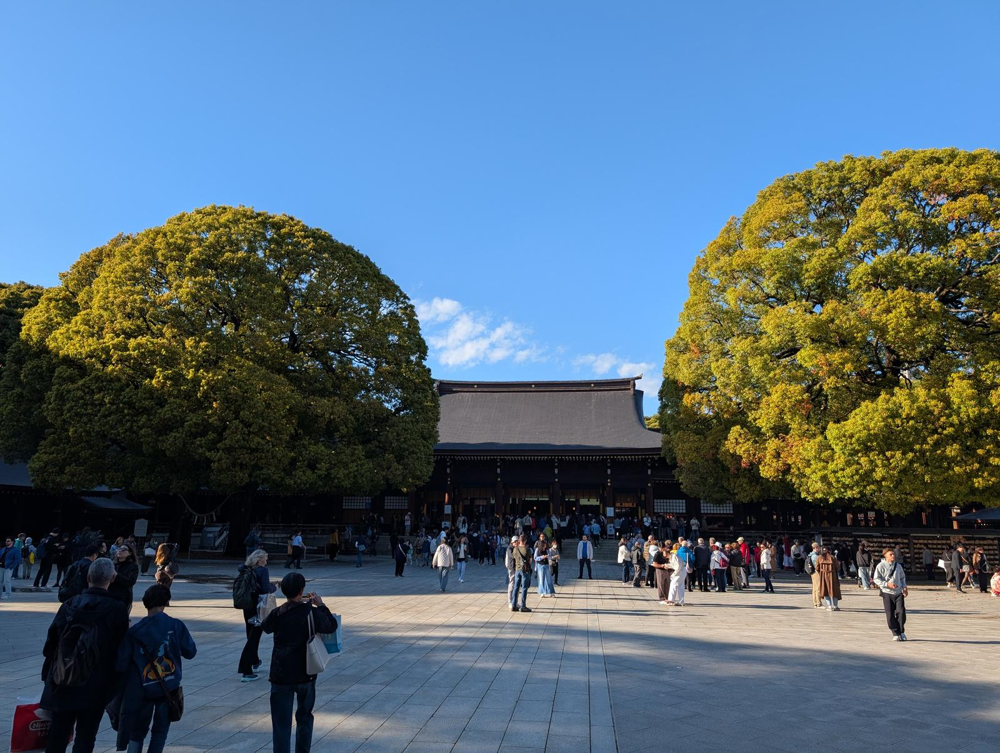
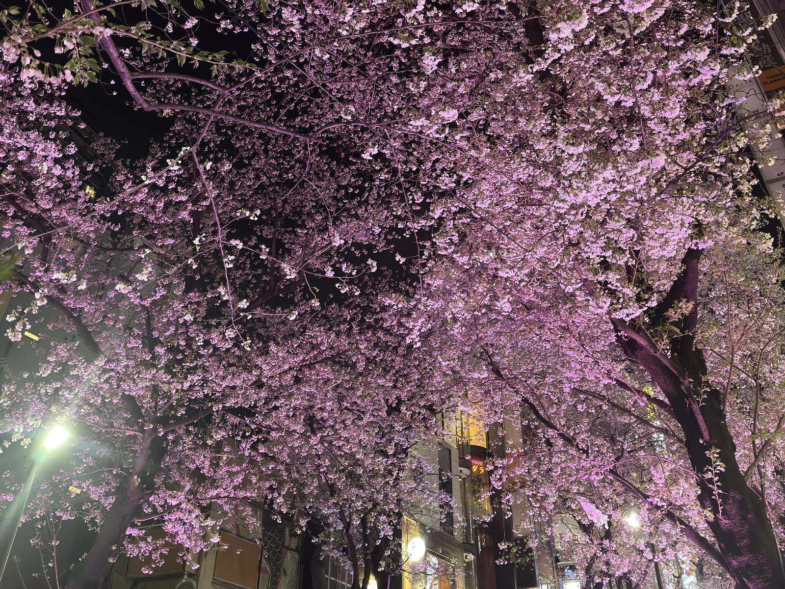
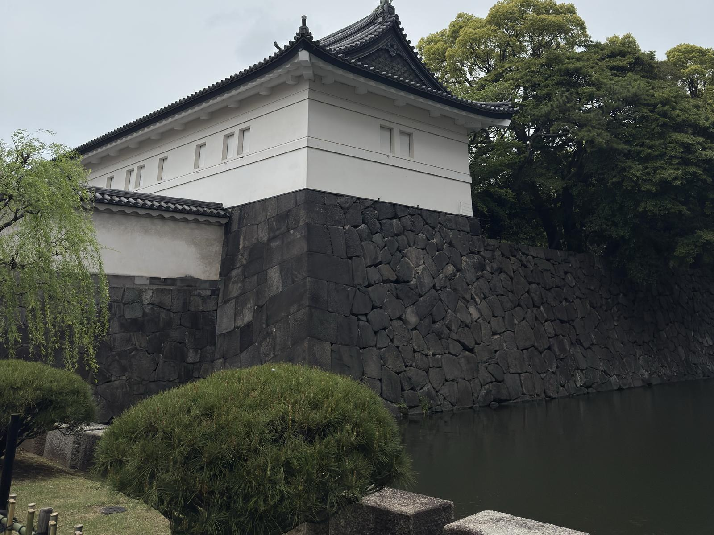
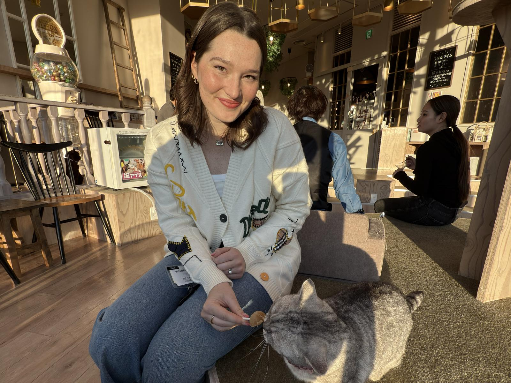
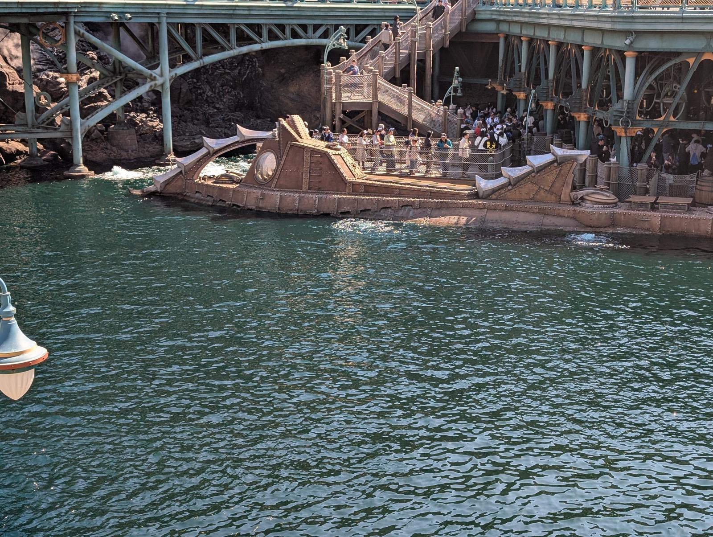

Places worth your time
Sights
The landmarks, parks, and one-of-a-kind spots we'd send you to, with honest notes and a map pin on each. Filter by area to plan a day.

Hakone · about 90 min from Tokyo
Hakone: day trip or overnight? We did both.
Two different experiences, and honestly worth doing both. The day trip is about the Hakone Ropeway and the wide mountain-and-valley views — an easy there-and-back if your days are full. The overnight is about slowing down: a reserved Romancecar seat out, a private onsen tub on the balcony at Tonoyu Setsugekka, and a morning with nowhere to be.
If you only have time for one, choose by what you need that week — a view, or a rest.



Ueno
Ueno Park
A huge, leafy park packed with museums, shrines, and — if your timing is lucky like ours — a festival with rows of food carts. Check whether anything's on when you go; it made our evening.
Festival timing is luck of the draw — worth checking the local event calendar.

Shibuya
Yoyogi Park & Meiji Jingu
We're grouping these because we did — they sit right next to each other. Yoyogi is the wide-open green space; Meiji Jingu is the serene forested shrine tucked beside it. A perfect slow walking morning.

Shibuya
Sakurazaka Street
A cherry-blossom-lined street that turns into a soft pink tunnel at peak bloom. We ended a night here and it quietly became one of our favorite sakura moments of the trip.

Central
Imperial Palace
The outer grounds are free and open to everyone; the inner grounds are also free but need an advance reservation. The gardens and moats are a calm change of pace from the neon.
Reserve the inner tour ahead — and arrive very early; a construction re-route made us miss our slot.

Shibuya
Cat Café Mocha
A bright, relaxed cat café that made a cozy afternoon break from shopping. Exactly the kind of low-key thing that's nice to have in your back pocket on a busy day.

Maihama
Tokyo Disney Resort
We gave this a whole day and have real opinions about how to do it right — from which park to prioritize to the FastPass strategy that saved us. It's big enough that we put it on its own page.